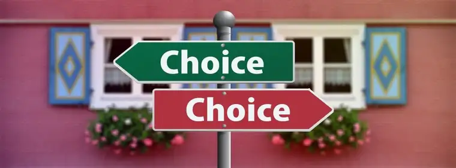

By the time I arrived that day, the sidewalk advocates who’d come earlier had bad news. “Women have just been pouring in today. Maybe 25 have gone in already.”
It wasn’t what I’d hope to hear as I assumed my post at our state’s only abortion facility, but there it was. About five additional women came in during my couple hours on site; meaning that, all told, around 30 children had died, 60 women and men had become parents of dead children, and 120 grandparents had, knowingly or unknowingly, lost their grandchildren.
All in a day’s work for the Red River Women’s “Clinic.”
Not only was it a busy day, but a lot of hardened hearts had shown up, according to the morning crew. “There was a lot of anger today.” I also observed an unusual number of passersby stopping to talk to the escorts with the typical, demonstrative prattle: “I just had to tell you what a wonderful job you’re doing! Keep up the good work!”
I don’t usually intervene in these conversations, but something compelled me that day. “You know, they’re not doing good work,” I said to one of those who offered commendations to the abortion assistants. “Babies are being killed in there.” After a few terse words back, she shot at me, “Well, it’s not your choice!”
I couldn’t argue. “You’re absolutely right.” It was most certainly not my choice—in fact, I’d never assumed otherwise. Even if abortion were to become illegal again, it would still be a choice whether to obey that civil law. We are free agents, tasked with deciding how we will use the choices, the freedoms, God has given us.

I agreed with her and wanted her to own her choice. Everyone who makes any kind of move on the sidewalk—including those who coddle the escorts—have made a choice. If you stop by and tell us you appreciate what we are doing, that also is a choice, and we are grateful.
Soon, an older gentleman approached on a bike, stopping mid-sidewalk to chat. “Are you the ones for or against abortion?” he asked me through a mouth of stained or missing teeth. After we established our positions—he was pro-life too, he said—he posed a question that had been pressing on him. Did we happen to know when a heartbeat could be detected? He seemed shocked at the answer. “Really? Only 18 days?” he responded.
The conversation then diverged toward something he’d experienced years ago working, he shared, as a pollster for the Boston Globe. He was at the Democratic presidential convention, tasked with asking people, “Does life begins at conception?” A well-known physician, top notch in his field, answered, but not in the way my cycling friend had predicted, given his profession. “He said, ‘I used to believe that, but not anymore.’”
What had changed from before to that moment, we wondered? Certainly, not the science, for we have a better understanding now than ever of life’s beginnings. My biking comrade said he’d thought of that often through the years; it bothered him. Then, he returned to the heartbeat question. “That’s really something,” he said, thanking us for filling the gap, then off he went.
I then joined a friend, near where she’d written, in chalk, information to reverse the effects of the abortion pill: abortionpillreversal.com. Suddenly, a man came by and began trying to rub off the chalk with his shoe. A nearby business owner, he didn’t like the message, he said, noting that he had a choice to rub it off if he wanted.
There it was again: choice. Again, we couldn’t argue. He was free to try getting rid of the message. Maybe he felt it would erase whatever was tugging at his conscience. Did he realize that tug wouldn’t disappear, even if the words did?
God chooses too. He chose to love us into being. And, knowing we’d mess up sometimes, he chooses to forgive us if we approach him with a contrite heart. If we follow him, he chooses to offer us life in abundance. Sooner or later, though, we will have to make an account of our choices. We—and we alone—will face whether we increased the life and good he gave us or compromised it, for death and evil.
Our presence on the sidewalk offers more than a way out for women. It also serves to help awaken consciences. God invites us every day to take part in the salvific mission of drawing all to him.
May the blind see, may the lame run free—far, far away from the abortion facility on this desolate corner of our city downtown.
[Note: I write about my experiences on the sidewalk Downtown Fargo on Wednesday, the day abortions happen at our state’s only abortion facility, for New Earth magazine — the official news publication of the Fargo Diocese. I hope you find “Sidewalk Stories” helpful in understanding the truth about abortion and how it plays out tragically each week here in Fargo, N.D. The preceding ran in New Earth’s June 2020 issue.]